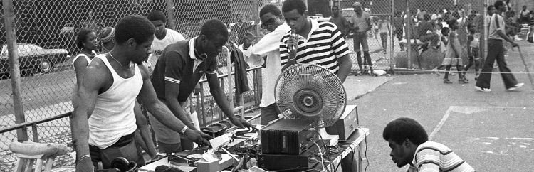
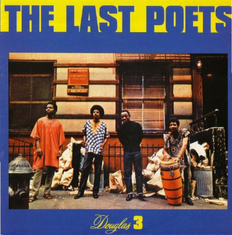
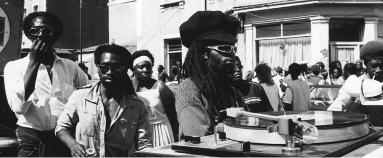
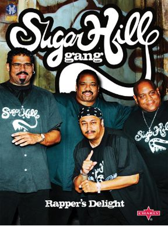
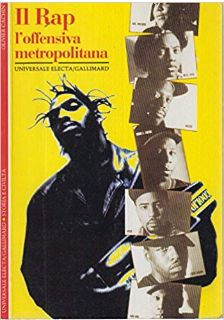
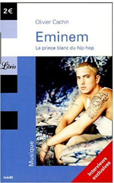
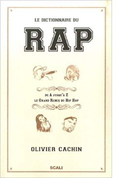
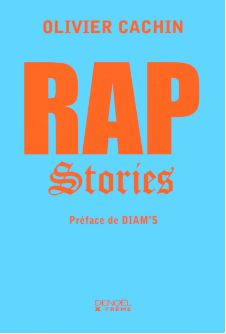

Que se cache t-il derrière cette musique tant appréciée des jeunes ?
Un vent de rap dans le monde musical

C'est en 1970 que le rap se fait une place dans le monde musical. Ce nouveau style voit le jour dans les ghettos urbains américains. Des jeunes parlent en rimes sur des rythmes de la colère ou de la joie des afro-américains. Ce style musical commence à se faire connaître aux Etats-Unis. Censuré par les radios, boycotté par les médias, le rap réussit à se démarquer. Cet univers dispose de sa propre identité. Beaucoup d'éléments caractérisent et différencient chaque rappeur. Les codes vestimentaires et linguistiques font partie de ces éléments. Tout se passe dans de simples démarcations : de la casquette à l'envers aux graffitis représentant les symboles de certains clans.
Q'est ce q'une Bloc Part ?
Le rap naît au cœur d'un quartier du Bronx en juillet 1976. Le soir, des block party sont organisées par un DJ et un MC. Ces block party rassemblent les gens de quartiers pour faire la fête en dehors des villes. C'est à ce moment-là que les ghettos noirs inventent une nouvelle musique.
Le DJ s'aperçoit que le break est très apprécié du public, il mixe alors les breaks entre eux pour garder le public en haleine. Le MC motive les gens en parlant en rimes et en rythme. Il se sert énormément de la culture afro-américaine pour s'inspirer. C'est ainsi que le rap s'inscrit et commence à voir le jour.
Les premiers groupes et artistes
Les premiers groupes de rap font leur apparition. Dans le lot un groupe nommé les " Last Poets " composé de jeunes noirs militants qui riment leur rage et leur haine. Leurs textes sont chargés politiquement et d'une violence claire dans des sons tels que " Niggers are Scared of Revolution " ou " Run, Nigger, Run ". Ces jeunes rappeurs deviennent une menace pour le FBI du fait qu'ils fréquentent Malcolm X ainsi que les Black Panthers.
Le rap provient également de la Jamaïque. Depuis 1960 les " sound system " inondent la Jamaïque et les " toasters " racontent leur histoire sur fond de face B. Les premiers DJ stars américains sont d'ailleurs Jamaïcains tels que DJ Kool Herc et Grandmaster Flash.
Le rap provient également de la Jamaïque. Depuis 1960 les " sound system " inondent la Jamaïque et les " toasters " racontent leur histoire sur fond de face B. Les premiers DJ stars américains sont d'ailleurs Jamaïcains tels que DJ Kool Herc et Grandmaster Flash.
D' autres mentions à citer telle que Kurtis Blow premier rappeur ayant atteint le succès ou le groupe " Sugarhill Gang " avec leur single mondialement connu " Rappers' Delight " de 1979. Le rap commence à devenir une industrie qui brasse des milliards de dollars
Rap, synonyme de misère ?
Si le rap est considéré comme dur c'est qu'il y a des raisons. La relation entre noir et blanc n'est pas toujours celle que l'on espère. Aux Etats-Unis, un Noir a deux fois plus de chance qu'un Blanc d'être au chômage. Dans les grandes villes la principale cause de mortalité des Noirs entre 15 et 24 ans est l'homicide ( 48 % noirs 8% blancs ). La plupart des crimes sont commis sur des Noirs. Ce sont ces sujets qui ressortent le plus de la bouche des rappeurs qui deviennent des vrais reporters de guerre.
Cri de colère ou de célébration, le rap devient en quelques années la bande-son de la jeune Amérique noire en quête d'une nouvelle identité. Censuré, boycotté par les radios, le rap a pourtant su s'imposer comme la dernière aventure d'une pop musique en mal de héros. De Public Enemy à Snoop Doggy Dogg, des prophètes de la rage aux gangsta rappers, Olivier Cachin nous fait découvrir un univers parallèle, celui d'une musique brute qui connaît le poids des mots.
Extrait du Libre
Extrait du Livres
   Il rap. L'offensiva metropolitana (1994)
Eminem: le prince blanc du hip-hop (2005)
Le dictionnaire du rap (2007)
Rap stories (2008)